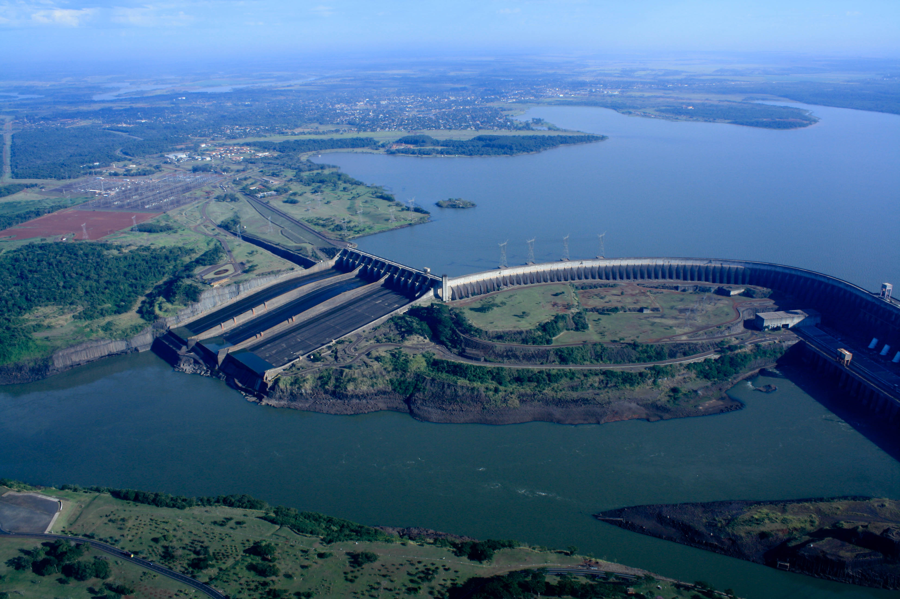

Energia Hídrica
A produção de hidroeletricidade é principalmente efetuada através de centrais hidroelétricas que estão associadas as barragens de grande ou média capacidade, a produção de hidroeletricidade representa o armazenamento das águas dos rios, constituído por um reservatório e interrompendo pontualmente o fluxo de água.
Estas centrais usam a energia da diferença de nível entre a albufeira e o rio, para assim rodar as turbinas e os respectivos geradores, transformando a força concentrada das águas em energia hídrica.
Com tudo esta energia tem sido aproveitada desde então, através da aplicação do que se designa pequenas centrais hídricas, as PCHs, que consistem na construção de pequenos açudes ou barragens, desviando uma parte do caudal do rio para então lhe devolver num local desnivelado (onde são instaladas as turbinas), produzindo assim a eletricidade que é distribuída pela rede elétrica convencional.

|
Processos relevantes na construção de centrais hídricasA produção da hidroeletricidade é considerada um dos processos mais eficientes e menos poluidores, incorporando as vertentes das energias renováveis e sustentáveis. Instalando novos projetos com construções de barragens em locais apropriados, os efeitos no ecossistema poderão ser reversíveis e amenizados, não impactando de maneira agressiva o meio ambiente, analisar o local de implementação das hidroelétricas é fundamental para proteger as nascentes dos rios, mananciais e demais aspectos ecológicos que determinam o curso das barragens. Saiba mais sobre as vantagens e desvantagens da energia hídrica. Nas pequenas centrais hídricas, os inconvenientes como citamos para o meio ambiente, resumem-se praticamente à fase de construção e desenvolvimento das obras. Logo após esse processo, os impactos negativos diminuem significativamente, a fase de funcionamento é mais simples e menos nociva, causando assim um melhoramento contínuo no processo de inicialização da hidroelétrica. Com relação à eletricidade gerada em Portugal, cerca de 30% vem da energia hídrica, ou seja, o potencial em hidroelétricas é essencial para o avanço determinante das energias renováveis neste País. |
Eficiência do projeto arquitectónico em barragensAs centrais hídricas de produção de hidroeletricidade nada mais são do que, grandes projetos arquitectónicos, tendo isto em mente os responsáveis devem analisar primeiramente o local em que a barragem será construída, e claro utilizar de ótimos equipamentos para viabilizar cada etapa técnica da hidroelétrica. A construção de uma barragem engloba várias engenharias, não somente a elétrica como já sabemos, mas um conjunto de vertentes essenciais para determinar a eficiência de todo o sistema de energia hídrica, modelos físicos, matemáticos e geográficos são necessários para dar o suporte ao início das obras. Redes de transmissão, turbinas, geradores e demais itens do processo deverão possuir uma avaliação criteriosa, assim quando as hidroelétricas estiverem em total funcionamento, os custos de manutenção, reparos e atualização serão menos nocivos, tanto para a organização que detém os recursos, quanto ao meio ambiente. |
 |